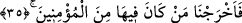
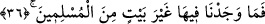

özellikle ayrılması için nişanlanmış yahut da hangisinin kime isabet edip onu helâk
edeceği belli edilmiş taşlar olduğunu söyleyenler de vardır.
“Bu taşlar, Rabbinin katında” yâni kendisinden başkasının tasarrufta bulunamayacağı
hazinelerinde “haddi aşanlar için hazırlanmış,” fısk-ı fücûrda haddi aşanlar için
“işâretlenmiştir.” Çünkü onlar, cima için kendilerine mübah kılınan kadınlarla
yetinmeyip erkeklere de yaklaşmakta idiler.
İbn-i Abbas “haddi aşanlar”dan maksadın “müşrikler” olduğunu söylemiştir. Zira
şirk, günahların en ileri seviyesi ve en büyüğüdür.
35. Bunun üzerine orada bulunan müminleri çıkardık.
Meleklerin kendilerine emredilen şeyi Lut (a.s) ve ona inananlara müjdelemelerini
müteâkiben biz “....âileni gece yola çıkar” (Hûd 11/81) kavlimizle onları oradan
çıkarıp uzaklaştırdık. Dolayısıyla “çıkardık” sözü Cibril’in değil, Allah Teala’nın
sözüdür.
Kâşifî şöyle demiştir: Bilindiği gibi İbrahim (a.s), melekler Lût kavmini helâk etmek
üzere Mü’tefike’ye gittiklerinde mübârek kalbi birâderzâdesi için elem duydu ve “bu
belâdan nasıl kurtulacak” diye endişe duydu. Melekler kendisine, “Üzülme Lût (a.s) ve
kızları kurtulacaklar” dediler.
“Orada” Lut (a.s)’ın kavminin yaşadığı kentlerde –ki bu kentlerin sayısı Kâşifi’nin
tefsirinde beş olarak geçmektedir- bulunan ve Lut (a.s)a inanan mü’minlerden kim varsa
çıkardık. Allah Teala’nın bu şehirleri isimleriyle değil de zamirle belirtmesi, onların
bilinen meşhur yerler olmalarına binâendir.
36. Zaten orada müslümanlardan, bir ev halkından başka kimse bulmadık.
Bildirildiğine göre bu müminler Lût (a.s) ve iki kızı idi. Karısı ise kâfir idi. Âyet
buna işâret etmektedir.
Şeyh Sa’dî der ki:
Lûtun zevcesi kötülerle dost olduğundan,
Peygamber âilesinden olma şerefini kaybetti.
Hâlbuki Ashâb-ı Kehf ’in köpeği birkaç gün,
İyilerin arkasına düştü de insan şerefine erişti.